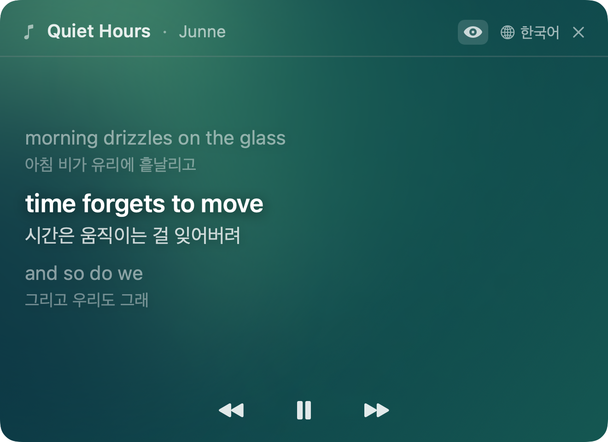
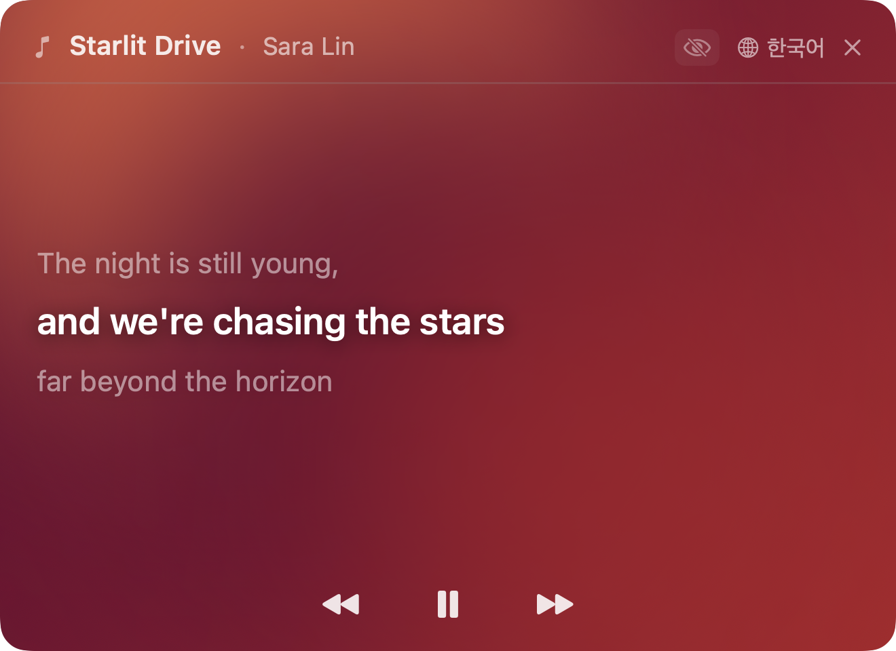

Spotify · Apple Music 재생곡을 싱크 가사로 띄우고, 곡이 시작되기도 전에 9개 언어 번역을 준비합니다. Versa shows synced lyrics for whatever's playing on Spotify or Apple Music, and pre-translates every line in 9 languages before the song even starts.
곡이 바뀔 때마다 팔레트도 바뀝니다. 같은 화면이 한 번도 같지 않아요. A new palette for every song. The same view, never twice the same.

곡마다 다른 팔레트A new palette per song
원문만 보기 (눈 아이콘 토글)Original only (eye toggle)재생이 시작되는 순간 가사는 이미 번역돼 있고, 배경은 라인을 따라 흐릅니다. The lyrics are translated before the first note plays, and the backdrop flows along with every line.
이전 · 현재 · 다음, 딱 세 줄. 주변 라인은 은은하게 페이드되고 현재 라인만 또렷이 남아 시선이 저절로 모입니다. Previous, current, next — just three lines. The surrounding lines fade out, so the current line holds your attention naturally.
곡을 불러오는 순간, 전체 가사를 백그라운드에서 병렬 번역해둡니다. 라인이 바뀌어도 "번역 중…" 같은 지연이 없습니다. The moment a track loads, every line is translated in parallel in the background. No "Translating…" flash when the next line comes in.
대상 언어는 한 번의 클릭으로 바뀝니다. 선택은 다음 실행에도 유지되고, 언어별로 캐시가 분리돼 전환이 즉시 이뤄집니다. Switch target languages in a single click. Your choice persists across launches, and each language has its own cache — toggling is instant.
라인이 바뀔 때마다 6종 팔레트가 부드럽게 전환됩니다. 60fps 로 흐르는 그라디언트 블롭이 메뉴바 창 안을 은은하게 채웁니다. Six gradient palettes glide into each other as the lines pass by. Gradient blobs flow at 60fps, giving the little window a quiet warmth.
눈 아이콘 하나로 번역 ↔ 원문을 즉시 전환하고, 재생 · 정지 · 이전 · 다음 곡까지 메뉴바 창 안에서 조작합니다. One tap on the eye icon flips between translation and original. Play, pause, previous, next — all from inside the menu bar window.
Versa 는 아직 Apple 공증 전이라 첫 실행 때 시스템 설정에서 한 번 허용해야 합니다. Versa isn't Apple-notarized yet, so the first launch needs a one-time approval in System Settings.
.dmg 파일을 받습니다.
Click Download for Mac above to grab the .dmg file.
왜 시스템 설정까지 가야 하나요? Versa 는 아직 Apple Developer Program 공증을 받지 않은 상태입니다. macOS 15 (Sequoia) 부터는 우클릭 → 열기 단축이 막혀, 시스템 설정 → 개인정보 보호 및 보안 → 그래도 열기 가 유일한 우회 경로입니다. 한 번만 허용하면 이후부터는 Launchpad · Spotlight 에서 일반 앱처럼 바로 열 수 있습니다. Why does it need System Settings? Versa isn't enrolled in the Apple Developer Program yet, so it isn't notarized. Starting with macOS 15 (Sequoia), the right-click → Open shortcut no longer works for unsigned apps — System Settings → Privacy & Security → Open Anyway is the only path. After you approve it once, Versa opens normally from Launchpad or Spotlight.
더 궁금한 점은 GitHub 이슈로 남겨주세요. Have something else to ask? Open an issue on GitHub.
Spotify 와 Apple Music (Music.app) 입니다. 두 앱 중 재생 중인 쪽을 자동으로 감지합니다. YouTube 와 브라우저 재생 지원은 로드맵에 있습니다. Spotify and Apple Music (Music.app). Versa auto-detects whichever one is currently playing. Support for YouTube and browser playback is on the roadmap.
가사 조회와 번역 모두 외부 API (LRCLIB, Google 번역) 를 사용하므로 네트워크가 필요합니다. 한 번 불러온 곡의 가사와 번역은 세션 동안 메모리에 캐시됩니다. Lyrics lookup and translation both rely on external APIs (LRCLIB and Google Translate), so network is required. Once a track is loaded, its lyrics and translations stay in memory for the session.
LRCLIB 에 싱크 가사가 등록된 곡만 표시됩니다. LRCLIB 는 사용자 업로드 기반이라 최신 곡이나 덜 알려진 곡은 아직 등록돼 있지 않을 수 있습니다. Only tracks with synced lyrics on LRCLIB show up. LRCLIB is community-contributed, so brand-new or lesser-known tracks may not be there yet.
아니요. Versa 는 가사 API 에는 곡 제목과 아티스트명만, 번역 API 에는 가사 텍스트만 전송합니다. 사용자 식별 정보, 트래킹, 분석 SDK, 로그 서버는 전혀 없습니다. No. Versa sends only the song title and artist to the lyrics API, and only the lyric text to the translation API. There are no user identifiers, trackers, analytics SDKs, or log servers.
현재는 완전히 무료이며 광고도 없습니다. 장기적으로 무료 (광고 포함) 와 Pro (광고 제거 + 고급 기능) 로 나누는 모델을 검토 중이지만, 전환은 빨라야 v1.0 이후입니다. Completely free with no ads for now. Long-term, a Free (with ads) / Pro (ad-free + extras) split is being considered, but not before v1.0.
현재 빌드는 Apple Silicon (M1 이상) 전용입니다. Intel Mac 지원은 수요에 따라 이후 유니버설 바이너리로 검토할 예정입니다. The current build is Apple Silicon only (M1 or later). A universal binary for Intel is under consideration depending on demand.